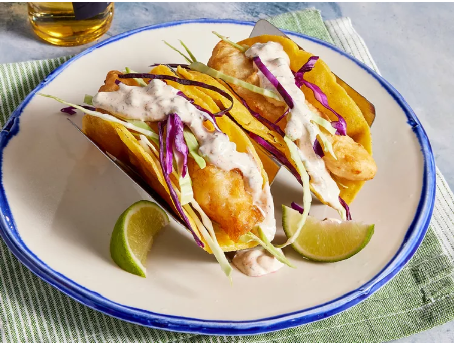

Fish Tacos

Description
These crispy fish tacos with shredded cabbage and a spicy homemade white sauce are just delicious! Serve with homemade pico de gallo and lime wedges to squeeze on top.
Ingredients
- 1 quart oil for frying
- 1 pound cod fillets, cut into 2 to 3 ounce portions
- 2 tablespoons all-purpose flour, or more as needed
- 1(12 ounce) package corn tortillas
- ½ medium head cabbage, finely shredded
Steps
- Make beer batter: Combine flour, cornstarch, baking powder, and salt in a large bowl. Blend beer and egg in a separate bowl, then quickly stir into flour mixture until combined with few lumps remaining
- Make white sauce: Mix together yoghurt and mayonnaise in a medium bowl. Gradually stir in fresh lime juice until consistency is slightly runny. Season with jalapeno, caoers, cayenne, orengani, cumin, and dill.
- Start fish tacos: Heat oil in a deep-fryer to 375 degrees F(190 degree C)
- Dust fish pieces slightly with flour. Set aside
- Dip floured fish pieces into beer batter. Set aside
- Fry in hot oil until crisp and golden brown. Drain on paper towels. Lightly fry tortillas in hot oil until just criped, but not too crisp. Drain on paper towels.
- Place fried fish in tortillas; top with shredded cabbage and white sauce